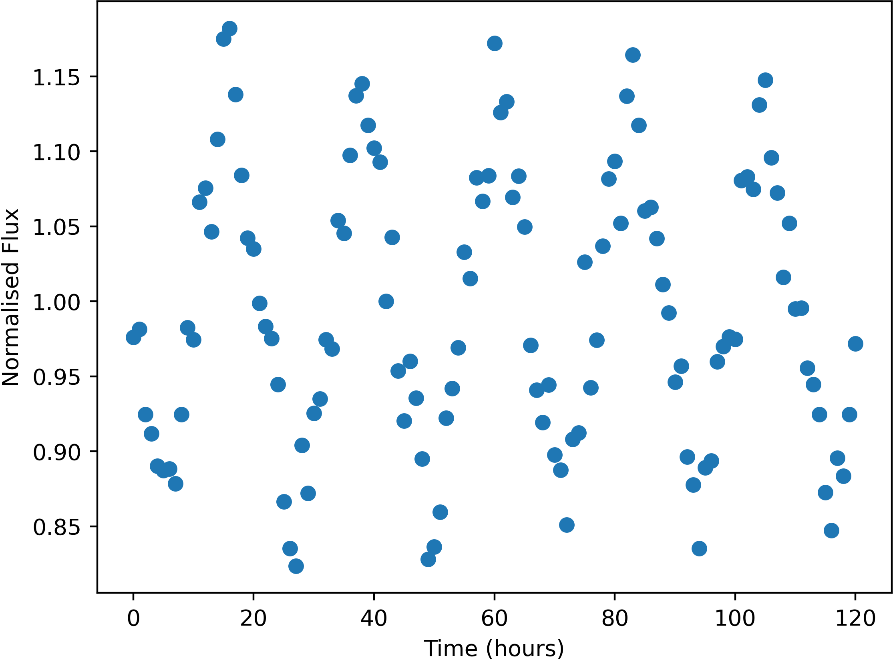

Some stars in the sky were found to change in apparent brightness over time, usually following a periodic trend.

Example of a variable star lightcurve - star FrontS60896
Units of the variable data are:
Uncertainties in this data (one standard deviation) are:
Here is a list of the flashes detected, with their approx. positions and number of photons detected. Positions are given by where they would appear in the relevant wide-field camera image. Positions are only accurate to 0.05 degrees (one standard deviation).
The X-Ray camera is sensitive to burts of more than 174 photons only.
| Name | Direction | X | Y | Photon-Count |
|---|---|---|---|---|
| FE01 | Back | -8.46 | -7.80 | 455 |
| FE02 | Bottom | 36.52 | -42.18 | 363 |
| FE03 | Front | 10.07 | -21.42 | 56368232 |
| FE04 | Top | -14.49 | 37.69 | 500 |
| FE05 | Left | 35.73 | -24.98 | 509 |
| FE06 | Top | -41.36 | -39.79 | 310 |
| FE07 | Top | 42.89 | 5.38 | 602 |
| FE08 | Front | -17.75 | 3.82 | 299 |
| FE09 | Right | 24.24 | -0.29 | 1235 |
| FE10 | Top | -24.17 | -10.22 | 1559 |
| FE11 | Bottom | 20.30 | 22.62 | 9065330 |
| FE12 | Back | -8.69 | -7.70 | 467 |
| FE13 | Bottom | -30.73 | -19.99 | 1136 |
| FE14 | Bottom | 36.07 | -42.33 | 344 |
| FE15 | Back | -8.67 | -7.43 | 489 |
| FE16 | Back | 42.13 | 23.41 | 564 |
| FE17 | Back | -3.49 | -21.77 | 3908 |
| FE18 | Bottom | 13.02 | 8.16 | 56728 |
| FE19 | Top | -24.22 | -11.64 | 1609 |
| FE20 | Top | -14.49 | 37.57 | 510 |
| FE21 | Back | 19.29 | 3.91 | 635 |
| FE22 | Top | 18.98 | 13.00 | 2675 |
| FE23 | Left | -19.99 | -0.68 | 177743 |
| FE24 | Bottom | 36.24 | -42.08 | 397 |
| FE25 | Top | 2.87 | 10.55 | 730 |
| FE26 | Right | -28.64 | -8.32 | 5557 |
| FE27 | Front | 15.32 | 38.12 | 188471364472 |
| FE28 | Bottom | 11.69 | 29.18 | 3954 |
| FE29 | Right | 24.19 | -0.23 | 1178 |
| FE30 | Top | -41.56 | -40.04 | 323 |
| FE31 | Top | -23.35 | -10.39 | 1559 |
| FE32 | Back | -8.71 | -7.66 | 473 |
| FE33 | Right | 19.81 | -0.92 | 427 |
| FE34 | Back | 22.85 | 31.46 | 3009 |
| FE35 | Bottom | -14.46 | -12.13 | 979 |
| FE36 | Back | 19.29 | 3.91 | 615 |
| FE37 | Front | 3.96 | 27.03 | 343 |
| FE38 | Back | -8.79 | -7.82 | 452 |
| FE39 | Back | 31.80 | -44.56 | 540 |
| FE40 | Top | 18.55 | 14.10 | 2690 |
| FE41 | Back | 18.90 | 3.03 | 633 |
| FE42 | Top | -41.60 | -39.73 | 350 |
| FE43 | Bottom | 11.90 | 29.12 | 3992 |
| FE44 | Back | 19.46 | 2.94 | 645 |
| FE45 | Back | 9.90 | -18.02 | 857 |
| FE46 | Front | 36.07 | -26.73 | 1260 |
| FE47 | Top | 7.19 | -14.09 | 562 |
| FE48 | Back | -35.04 | -19.53 | 674 |
| FE49 | Back | -3.99 | -22.40 | 3803 |
| FE50 | Top | 14.19 | 32.29 | 551 |
| FE51 | Back | -34.62 | -19.05 | 674 |
| FE52 | Right | 3.26 | 1.10 | 1559 |
| FE53 | Back | -35.11 | -19.39 | 696 |
| FE54 | Left | 16.04 | 36.51 | 314 |
| FE55 | Bottom | 36.08 | -42.06 | 343 |